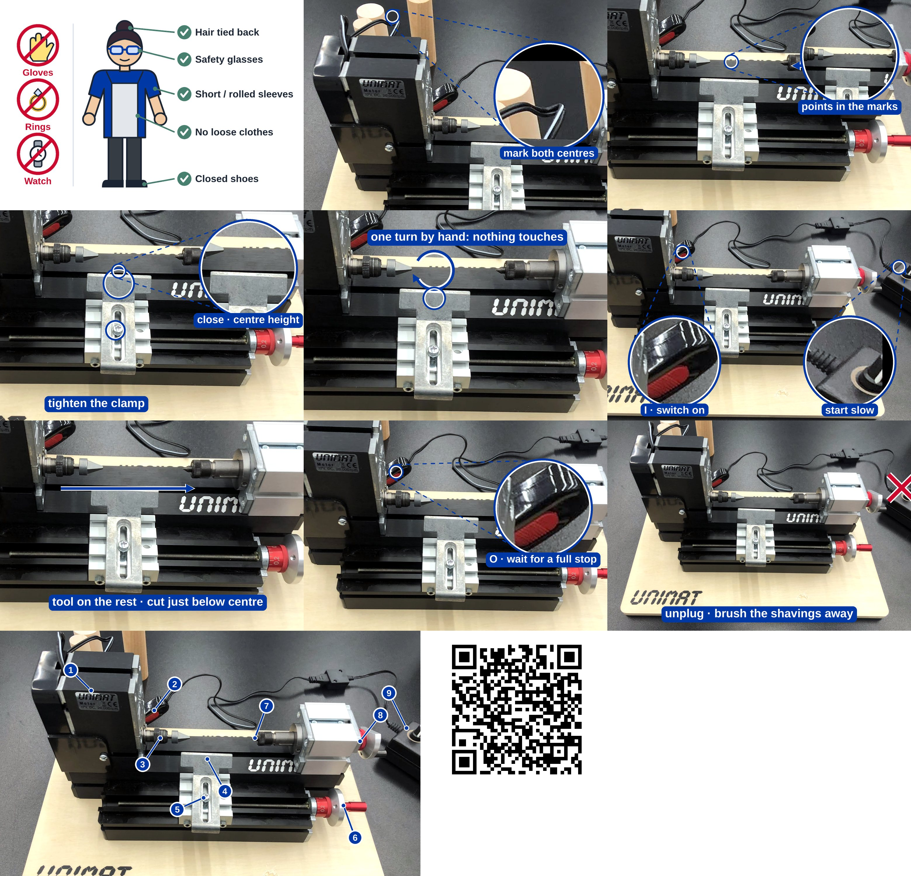
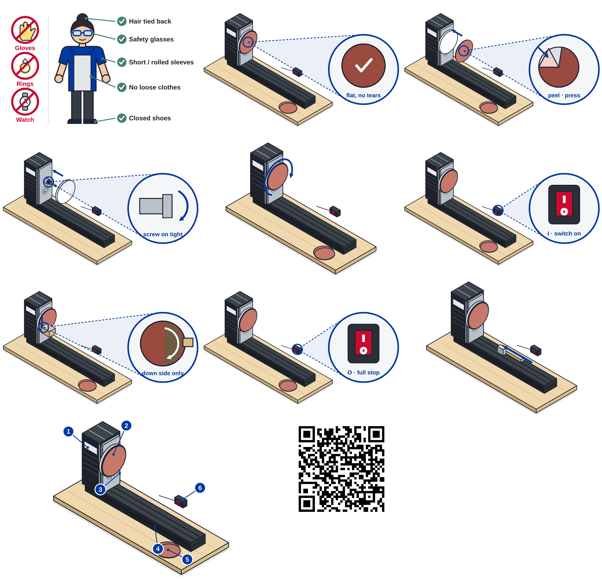

← M-01 machine page
Quick Start Guide
Print / save PDF
Wood lathe
Disc sander
ICE Lab · AUBH · Manufacturing
Quick Start Guide
M-01
UNIMAT ML Technics · wood lathe
Wood turning between centres

Scan: machine page, booking & simulator
Know your machine
1
Motor
· 12 V DC
6
Carriage handwheel
· slides the rest
2
ON / OFF switch
7
Tailstock centre
3
Drive centre
· on the headstock
8
Tailstock handwheel
· advances the centre
4
Tool rest (T-rest)
9
Speed knob
· variable power adapter
5
Tool rest clamp screw
!
Safety first
Adjust the tool rest only with the machine stopped.
No gloves, loose sleeves, jewellery or open long hair.
Keep the rest close to the blank; never reach over the spinning blank.
Stand to the side, not in line with the blank.
First time? Book an induction with a technician.
At a glance
Material
Soft wood blanks, no cracks or knots
Speed
Low to rough, higher to finish
Tool
Turning chisel on the T-rest
9 steps inside →
amralaa095-cell.github.io/ICE-LAB
M-01 · Steps 1–6
Set up the wood lathe
Circle = zoomed side view
Red border = stop and check
1
Gear up
Glasses on, hair tied, sleeves up, closed shoes. Take off gloves, rings and watch.
2
Prepare the blank
Straight-grained blank, no cracks. Mark the centre on both ends and punch a small dent.
3
Fit between the centres
Blank on the drive centre, wind the tailstock in until both points bite. Lock it.
4
Set the tool rest
About 3 mm from the blank, at its centre height. Tighten the clamp screw.
5
Turn by hand
CHECK
Spin the blank one full turn by hand: it must not touch the rest.
6
Low speed, power on
Speed knob to low, then switch on. Stand to the side of the blank.
M-01 · UNIMAT ML Technics · wood lathe · ICE Lab, AUBH
2
M-01 · Steps 7–9
Turn, stop, finish
Circle = zoomed side view
Red border = stop and check
7
Cut with the chisel
Hold the chisel firmly on the rest, edge just below centre. Light cuts, move along the rest.
8
Stop, then check
CHECK
Switch off and wait for a full stop. Move the rest away, then measure.
9
Off, unplug, clean
Unplug, brush the shavings off the bed and centres, return the chisels.
If something goes wrong
Blank wobbles
Stop. Wind the tailstock in and lock it
Chisel digs in
Tool flat on the rest, edge lower, lighter cut
Smoke at the tail centre
Back the tailstock off a little
Motor slows down
Lighter cuts, or a little more speed
Before you leave
Machine off and unplugged
Blank removed, rest slid back
Shavings brushed into the bin
Chisels and centres returned
Booking marked as finished
Book again & try the simulator
M-01 · UNIMAT ML Technics · wood lathe · ICE Lab, AUBH
3
ICE Lab · AUBH · Manufacturing
Quick Start Guide
M-01
UNIMAT ML Technics · disc sander
Disc sanding on the motor unit

Scan: machine page, booking & simulator
Know your machine
1
Motor unit
4
Bed
2
Sanding disc on the plate
5
Spare sanding discs
3
Headstock plate
6
In-line ON / OFF switch
!
Safety first
Sand only on the half of the disc that moves down.
Dust mask and glasses on. No gloves, loose sleeves or jewellery.
Small parts: hold with pliers or a clamp, never fingers near the disc.
Change discs only when switched off and unplugged.
First time? Book an induction with a technician.
At a glance
Discs
Self-adhesive, keep spares
Materials
Wood, plastic, soft-metal edges
Pressure
Light, keep the part moving
9 steps inside →
amralaa095-cell.github.io/ICE-LAB
M-01 · Steps 1–6
Set up the disc sander
Circle = zoomed side view
Red border = stop and check
1
Gear up
Glasses and dust mask on, hair tied, sleeves up. Take off gloves, rings and watch.
2
Check the disc
The disc must be flat, fully stuck and not torn. If not, change it.
3
Change a worn disc
Unplugged: peel the old disc, centre a new one on the plate and press it flat.
4
Fit the sanding plate
The plate replaces the collet chuck shown here. Screw it on the spindle and tighten.
5
Turn by hand
CHECK
Turn the plate one full turn by hand: it must run true and touch nothing.
6
Power on
Switch on with the in-line switch. Keep fingers clear of the disc.
M-01 · UNIMAT ML Technics · disc sander · ICE Lab, AUBH
2
M-01 · Steps 7–9
Sand, stop, finish
Circle = zoomed side view
Red border = stop and check
7
Sand on the down side
Hold the part firmly with light pressure on the half that moves down. Keep it moving.
8
Stop, then check
CHECK
Switch off and wait for a full stop before checking the part.
9
Off, unplug, clean
Unplug, wipe the dust off the machine and the bench, store the spare discs.
If something goes wrong
Part snatched
Lighter pressure, down side only, hold firmly
Burning smell
Keep the part moving, fit a new disc
Disc comes loose
Stop, unplug, fit a new disc pressed flat
Clogged disc
Change it for a new one
Before you leave
Machine off and unplugged
Worn discs in the bin
Dust wiped off machine and bench
Spare discs stored
Booking marked as finished
Book again & try the simulator
M-01 · UNIMAT ML Technics · disc sander · ICE Lab, AUBH
3